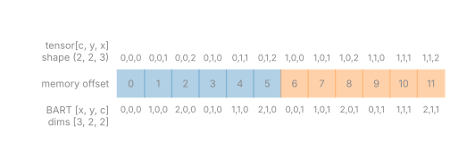

Data layout#
TL;DR
A C-order tensor of shape
(a, b, c)is the BART array of dimensions[c, b, a]: BART’s dimension \(d\) is tensor axis \(-(d+1)\), and nothing is copied.Axes are tensor axis indices; trajectories are
(kx, ky, kz)in grid units, from \(-N/2\) to \(N/2\) across a fully sampled readout.bartorch.fft()is centred and unnormalized, asbart fftis;bartorch.linop.FFTis centred and unitary.
You meet these conventions whenever data enters or leaves bartorch: k-space read from a scanner file, a trajectory designed in another package, an image compared against another reconstruction. Two reconstructions of the same data agree only if they agree on where each axis lies in memory, on the units of the trajectory, and on the centring and scaling of the Fourier transform. Lesson 1 of the Course shows the shapes a command takes and returns.
Capabilities#
Hands BART a tensor as its data pointer and its reversed shape, so a command works in the tensor’s own memory.
Code:
_dispatch.py,_buffer.py. Tests: scratch inputs skip the copy; phantom shape follows c order (test_core.py).Takes tensor axis indices, negative ones included, wherever BART takes a bitmask or a dimension number.
Code:
axes_flagsin_operator.py. Tests: negative tuple equiv positive; a negative axis needs no array; an index set is not reversed (test_flags.py).Lays out an operator’s arrays compactly, batches first and the transformed axes last, rather than on sixteen positional dimensions.
Code:
_layout.py. Tests: encoding axes behind a batch are transformed a batch item at a time (test_finufft.py); it keeps the shapes sense uses (test_linop_mri.py).Computes the centred FFT, unnormalized like
bart fftor unitary on request.Code:
fft(),FFT. Tests: fft matches numpy on two axes; inverse fft round trips (test_core.py); the fft matches numpy however many axes are looped over (test_fft.py).Computes the NUFFT with a negative exponent and a \(1/\sqrt{N}\) scaling, \(N\) the number of image voxels.
Code:
nufft(),NUFFT. Tests: matches an explicit dft on a radial trajectory (test_finufft.py).Reads ISMRMRD raw data, from a file or a scanner’s stream, into k-space placed by its counters, with the trajectory converted to grid units.
Code:
read_mrd(),read_mrd_stream(). Tests: readouts land where their counters place them; a stream reads as the file it would be written to; a 3d trajectory is not partitioned by the encoded depth; a trajectory in cycles per metre becomes grid units; a trajectory as a fraction of the bandwidth is scaled by the matrix (test_io.py).Reads and writes DICOM and NIfTI images with one RAS affine, so an image keeps its position across formats.
Code:
read_dicom(),write_nifti(). Tests: dicom and nifti agree on where a voxel is; nifti stores the affine nibabel reads (test_io.py).Reads and writes BART’s CFL files.
Code:
readcfl(),writecfl(). Tests: roundtrip 2d; trailing ones stripped (test_cfl.py).
Division of responsibility#
BART: the meaning of each of its sixteen dimensions, and the FFT and NUFFT conventions of its commands.
bartorch: the reversal at the boundary, axis indices, the compact operator layout, and the file readers.
Other libraries:
ismrmrd,pydicomandnibabelparse the files (theioextra); a trajectory frommri-nufftorsigpyis rescaled by you.
Method#

BART stores an array column-major and gives each dimension a role in
misc/mri.h: 0 readout, 1 and 2 phase encoding, 3 coils, 4 sets of maps, 5
echoes, 6 subspace coefficients, 10 time, 13 slices, 15 batch. Reversed, the
readout is the last tensor axis and the coils the fourth from last, so a
command’s Cartesian coil k-space is (coils, z, y, x). The operators of
bartorch.linop drop the singleton dimensions a problem does not use:
k-space is (*batches, coils, *encoding, shots, samples). Every layout is
listed in Array layouts and file conventions.
Trajectory units#
A trajectory is in grid units, multiples of \(1/\mathrm{FOV}\), so the Nyquist
interval is one. Its last axis holds (kx, ky, kz), kx along the last image
axis; a kz of zero throughout, or two components, makes the transform
two-dimensional. bartorch provides no conversion function, so you rescale,
with \(N_i\) the matrix size along component \(i\):
Trajectory from |
To grid units |
|---|---|
|
\(k_i N_i\), components reversed |
|
\(k_i N_i / (2\pi)\), components reversed |
|
Same units, components reversed |
Cycles per metre |
\(k_i \, \mathrm{FOV}_i\) ( |
torch.flip(k, (-1,)) reverses the components. After this, a transform from
mri-nufft agrees with bartorch.nufft() in sign and phase; its scaling
depends on the backend.
Fourier transform conventions#
Transform |
Centring |
Scaling |
|---|---|---|
Centred unless |
None in either direction unless |
|
Centred unless |
Unitary |
|
Image centre at index \(\lfloor n/2 \rfloor\) |
\(1/\sqrt{N}\), negative exponent forward |
A centred transform is fftshift(fftn(ifftshift(x))) over the transformed
axes, so bartorch.ifft(bartorch.fft(x, axes), axes) returns \(N x\) for \(N\)
transformed samples, where NumPy’s pair returns \(x\).
Image geometry#
The readers of bartorch.io return, and its writers take, a (4, 4)
affine from voxel indices (x, y, z), the last three tensor axes reversed, to
RAS millimetres, as NIfTI and nibabel define it. MRD and DICOM state
positions in LPS, and the readers convert them.
Examples#
1. Your data as tensors: the shapes a BART command takes and returns.
7. Basics of non-Cartesian imaging: trajectories in grid units and the NUFFT.
Parameter maps from scanner images: DICOM and NIfTI images with their affine.
File I/O: the readers and writers.